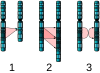

mutation

Definition: In biology, a mutation is an alteration in the nucleic acid sequence of the genome of an organism, virus, or extrachromosomal DNA. Viral genomes contain either DNA or RNA. Mutations result from errors during DNA or viral replication, mitosis, or meiosis or other types of damage to DNA (such as pyrimidine dimers caused by exposure to ultraviolet radiation), which then may undergo error-prone repair (especially microhomology-mediated end joining), cause an error during other forms of repair, or cause an error during replication (translesion synthesis). Mutations may also result from insertion or deletion of segments of DNA due to mobile genetic elements.
Source: Wikipedia
Wikipedia Page (Something wrong with this association? Let us know.)
Wikidata Page (Something wrong with this association? Let us know.)